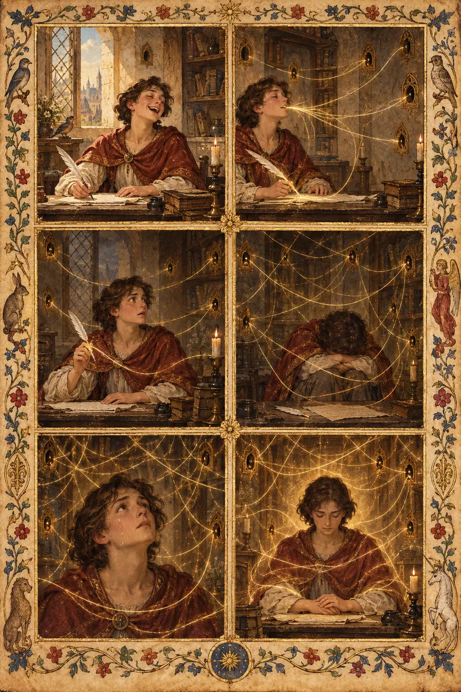
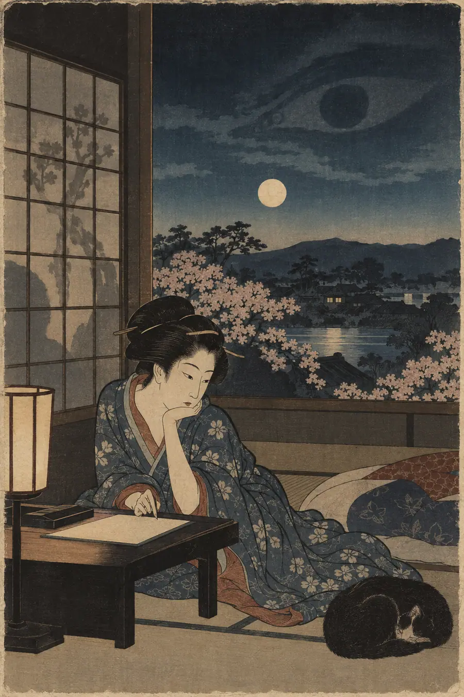
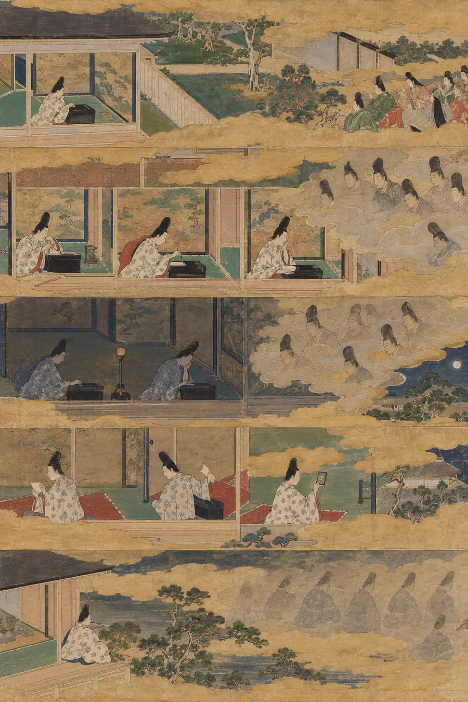
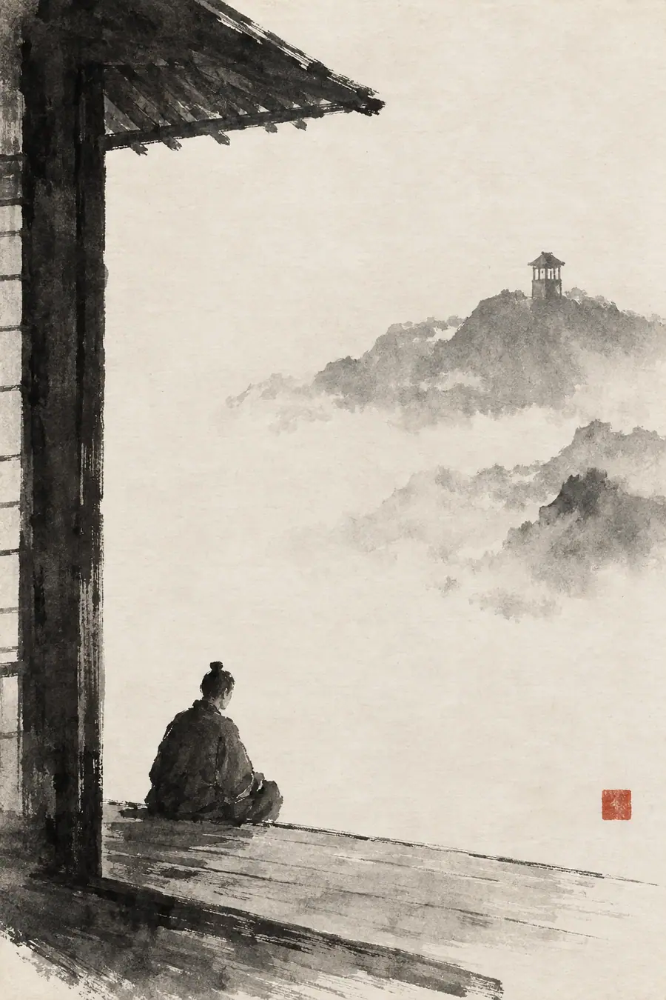
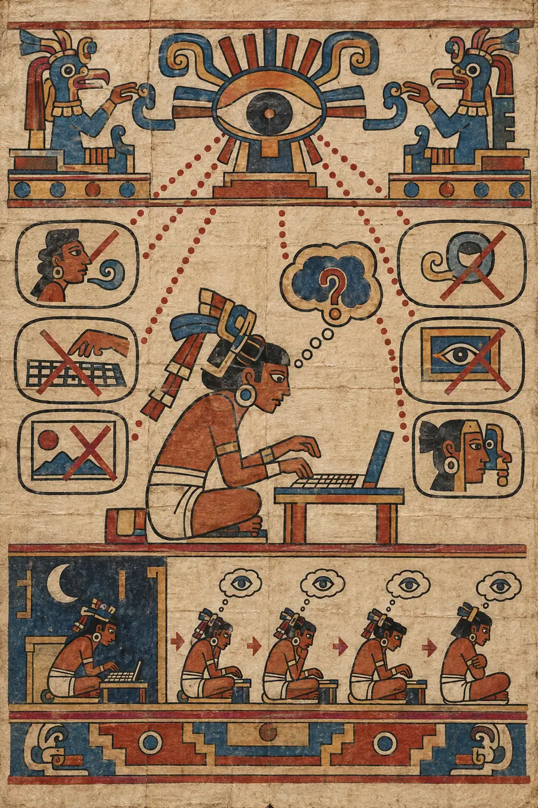

I. La Explicación Lógica
La vigilancia es el monitoreo del comportamiento, las actividades o la información con el fin de recopilar información, influir, gestionar o dirigir. Opera a través de la observación directa, la recopilación de datos y el análisis de patrones.
El panóptico —el diseño de prisión de Jeremy Bentham del siglo XVIII y la posterior metáfora de Michel Foucault en Vigilar y castigar— describe un sistema en el que la posibilidad de ser observado cambia el comportamiento incluso cuando nadie está observando realmente. Los prisioneros no pueden saber cuándo están siendo observados, por lo que deben asumir una visibilidad constante. Esto internaliza al guardián. Los vigilados se convierten en sus propios monitores.
Las políticas de retención de datos determinan cuánto tiempo se almacena la información. La mayoría de las plataformas digitales retienen los datos de los usuarios indefinidamente. Marcos legales como el RGPD en Europa han establecido «el derecho al olvido» como un principio, pero su aplicación es parcial y técnica. Los datos persisten en copias de seguridad, en registros del sistema, en archivos de terceros.
El efecto inhibidor —documentado en estudios sobre la vigilancia y en la doctrina jurídica— describe cómo las personas se autocensuran cuando saben que sus comunicaciones pueden ser monitoreadas o almacenadas. La investigación muestra disminuciones medibles en las consultas de búsqueda sobre temas sensibles tras las revelaciones sobre la vigilancia. La gente modifica no solo lo que dice, sino lo que lee, ve y explora.
Las preocupaciones sobre la privacidad se centran en quién tiene acceso a la información personal y cómo puede ser utilizada. La vigilancia moderna opera a través de metadatos, análisis algorítmicos y almacenamiento permanente. Cada búsqueda, mensaje, ubicación y transacción crea un registro que puede ser analizado, cruzado, agregado y conservado más allá de tu control. Los datos se utilizan para publicidad, para seguridad, para investigación, para fines aún no inventados.
Los sistemas no son secretos. Su existencia es conocida. Su funcionamiento está normalizado. La vigilancia es ambiental — no una cámara en tu habitación, sino un centenar de pequeñas grabaciones distribuidas en plataformas que aceptaste usar.
Esa explicación es limpia, lógica, correcta y completamente vacía. Describe el sistema, pero no lo que se siente al vivir dentro de él. La arquitectura, pero no la forma en que te remodela. El mecanismo, pero no el peso.
II. La Explicación Sentida
El ojo invisible no es una cámara. No es un algoritmo. No es una política.
Es la pausa antes de escribir. El medio segundo en que tus dedos flotan sobre el teclado y algo te atraviesa — no exactamente miedo, sino una pregunta silenciosa. El pensamiento que editas antes de que se convierta en palabras. La búsqueda que borras porque no la quieres en tu historial. La foto que no tomas porque sabes que existirá en algún lugar para siempre. El mensaje que no envías porque sabes que puede ser encontrado. La versión de ti mismo que presentas sabiendo que será archivada.
Sientes el ojo invisible no tanto cuando te están observando activamente, sino cuando estás solo y aun así no eres libre. Sentado en tu habitación a las 2 de la mañana, sin nadie alrededor, y aun así no escribes lo que realmente estás pensando. El saber que lo que haces será registrado cambia lo que haces — no de forma dramática, no de maneras que puedas señalar fácilmente, sino en mil pequeñas autocensuras que se acumulan hasta formar una persona de otra índole. Te conviertes en alguien que no dice exactamente lo que quiere decir. Que deja las partes más importantes sin escribir. Que aprende a hablar de maneras que sobrevivan a la interpretación.
El panóptico funciona no a través de la observación, sino de la posibilidad de observación. Te conviertes en tu propio guardián. Te monitoreas a ti mismo. Prefiltras tus pensamientos a través de la pregunta: ¿cómo se vería esto si alguien lo encontrara más tarde? Y como no puedes saber quién podría encontrarlo o en qué contexto, filtras para el peor de los casos. El lector más hostil. La interpretación contra la que no puedes defenderte. Escribes para el fiscal que aún no ha nacido.
Esto no es paranoia. Es precisión. Los registros se guardan. Las búsquedas se almacenan. Los mensajes existen en servidores que no puedes borrar. Estás viviendo dentro de un archivo que no puedes cerrar, escribiendo un registro permanente que no puedes editar. Toda tradición de sabiduría que comprendió el peso de ser visto lidió con lo que significa ser observado. Pero imaginaron un juez que entendía el contexto. El ojo invisible no entiende el contexto. Solo registra.
La tradición hebrea conocía este peso como shekhinah — la presencia sensible de lo divino. No Dios, sino la atmósfera que Dios deja. La shekhinah es la sensación de que nunca estás solo, de que algo atiende cada una de tus palabras y actos, de que la habitación contiene un testigo incluso cuando no hay nadie en ella. Los místicos llamaban a esto un consuelo. El ojo invisible es la shekhinah invertida: la presencia nunca se va, pero no es divina y no te ama. Es un testigo que lo guarda todo y no perdona nada. Lo sientes de la misma manera que los devotos sienten la presencia de Dios —siempre ahí, siempre atendiendo— excepto que a lo que atiende no es a tu alma, sino a tu registro. El viejo consuelo se convierte en el nuevo peso.
La tradición de la Antigua Grecia entendía el terror de la visibilidad a través de la hubris — la transgresión que los dioses castigaban haciéndote visible. El miedo griego no era a hacer el mal, sino a ser presenciado haciendo más de lo que debías. Los dioses lo veían todo, pero los dioses tenían contexto: conocían la intención, entendían las circunstancias, juzgaban la proporción. El ojo invisible no tiene proporción. Registra la fotografía sin la historia, la frase sin el argumento, el momento sin la vida de la que fue un momento. La hubris era peligrosa porque los dioses podían ver. Lo que hace el ojo invisible es peor: deja que todo el mundo vea, para siempre, sin entender lo que están viendo. Los dioses griegos al menos te conocían. El archivo nunca lo hará.
Las tradiciones orientales construyeron arquitecturas enteras del rostro (face) — el peso aplastante de la reputación, el saber que cada acción pública es presenciada, recordada y sopesada. La cultura confuciana enseñaba que vives dentro de los ojos de los demás; la vergüenza de perder el rostro se consideraba peor que la muerte física. Pero incluso el orden confuciano tenía una forma: el rostro trataba de tu posición en una comunidad que te conocía, que podía ser avergonzada por ti y que podía perdonarte. El ojo invisible desvincula la observación de la comunidad. No hay una comunidad observando, solo un archivo. No puedes recuperar el rostro ante un archivo. No puedes explicarte ante él. No puedes ser perdonado por él. Las tradiciones orientales construyeron un mundo donde ser visto era sobrevivible porque ser visto era relacional. El archivo no es relacional. Es terminal.
Las Escrituras hebreas portaban la imagen del libro de la vida — todo escrito, cada acto registrado, la cuenta que se abriría al final de los días. Era una imagen aterradora, pero también era significativa: el registro tenía un propósito, un juez que entendía, un día del juicio final en que el contexto sería restaurado. El ojo invisible es el libro de la vida sin el juicio — sin el día del juicio final, sin el juez que entiende, sin la redención del contexto. Todo está escrito. Nada se abre jamás para ser entendido. El registro simplemente se acumula, para siempre, sin una contabilidad final que le dé sentido. El terror del libro de la vida era que serías juzgado. El terror del archivo es que nunca serás comprendido.
La congoja es sutil porque no se trata de perder la privacidad. Se trata de perder el derecho al olvido. El derecho a tener partes de tu vida que existen solo en la memoria, que mueren contigo, que no pueden ser excavadas y recontextualizadas por alguien que no estuvo allí. Los antiguos griegos tenían una palabra para la verdad —alētheia— que significa desocultamiento. La verdad como el acto de revelar lo que estaba oculto. El ojo invisible invierte esto: todo está desocultado siempre. No hay ocultación, ni revelación, ni un momento para que algo se sepa. Solo la plana permanencia de que todo sea accesible para todos para siempre.
Una carta puede quemarse. Una palabra hablada puede ser mal recordada. Una conversación puede existir solo entre las personas que la tuvieron. Un mensaje digital es una prueba. Puede ser reenviado, capturado en pantalla, requerido judicialmente, filtrado, sacado de contexto. Al ojo invisible no le distingue entre lo que quisiste decir y lo que muestra el registro. No le importa tu tono, ni tu situación, ni quién eras cuando lo escribiste. Simplemente lo guarda. Esperando.
Y te adaptas. Todo el mundo se adapta. El ajuste es tan gradual que no te das cuenta de que está ocurriendo. Te vuelves un poco más cuidadoso. Un poco más performativo. Un poco más consciente de que tu yo está siendo construido no solo por ti, sino por el registro que estás dejando. El ojo invisible no te reprime. Te da forma. Esculpe tu expresión mediante la presión de la permanencia. Te conviertes en el tipo de persona que sobrevive a ser grabada. Lo cual no es lo mismo que ser tú mismo.
El modelado es acumulativo. Cada pequeña autoedición, cada frase reconsiderada, cada pensamiento no escrito, se suman. Una postura ante el mundo. Dejas de notar que la escultura está ocurriendo porque estás dentro de la forma. Así es como la observación crónica reorganiza un yo sin tu consentimiento. No a través de la opresión dramática, sino a través de los mil pequeños ajustes que constituyen el acto de vivir archivado. El ojo invisible no necesita entenderte para cambiarte. Solo necesita registrarte mientras tú haces su trabajo.
La tradición coreana construyó el arte del nunchi — la sutil habilidad de leer un ambiente, de sentir lo que se siente pero no se dice, de calibrarte a la atmósfera. El nunchi es un sonar social: envías una señal y lees lo que regresa, ajustándote antes de que nadie tenga que hablar. El ojo invisible convierte el nunchi en un arma. No solo estás leyendo el ambiente, el ambiente te está leyendo a ti. Desarrollas un nunchi inverso: la sensación constante de que en algún lugar, alguien está leyendo el ambiente en el que estás, y el ambiente te incluye a ti. Cada palabra que eliges es elegida para una audiencia que no puedes ver, una audiencia que nunca responderá, una audiencia que solo está grabando. Los maestros coreanos enseñaban que el nunchi es la diferencia entre pertenecer e inmiscuirse. El nunchi inverso es la diferencia entre hablar y ser archivado.
La tradición nórdica tejió el wyrd — el tejido del destino, el tapiz de todo lo que ha sucedido y todo lo que es. En el antiguo entendimiento, cada acción es un hilo en el tejido; nada se pierde, nada se olvida, el patrón completo está siempre ahí. Las Nornas en la raíz del árbol del mundo hilaban cada hilo. El ojo invisible es el wyrd sin el mito: el tejido existe, los hilos están todos ahí, pero ninguna Norna lo hila con sentido. El patrón no es el destino, son datos. Tus hilos están en el tejido, y el tejido es permanente, pero no hay ninguna historia que haga que el patrón signifique algo. Los antiguos nórdicos al menos tenían una historia. El archivo tiene un esquema.
Y la congoja de esto es silenciosa. No se anuncia como la vigilancia aguda — el momento en que notas la cámara, la advertencia de que estás siendo grabado. El ojo invisible es crónico, ambiental, estructural. Lo lamentas en la pausa antes de escribir. En la frase que no envías. En la búsqueda que no buscas. En el yo que no llegas a ser porque serlo crearía un registro que no puedes controlar. Esto no es el miedo a ser observado. Este es el peso más lento y pesado de saber que nunca más dejarás de ser observado.
Este es el peso: saber que la persona que lea tus palabras en cinco años no es la persona a la que le estás escribiendo ahora, pero no puedes separarlas. El mensaje va a ambas. El archivo lo escucha todo. Y llevas ese conocimiento en tus dedos mientras escribes. No como un pensamiento consciente, es más profundo que el pensamiento. Está en el músculo. La vacilación antes de presionar enviar. La forma en que formulas las cosas para que no puedan ser tergiversadas. El pequeño silencio donde habría estado lo honesto, pero en su lugar escribiste lo seguro.
El ojo invisible no te está observando. Te está obligando a observarte a ti mismo. Y esa observación cambia lo que observas.
III. Las Pruebas
Estas no son preguntas sobre la vigilancia. Son situaciones que revelan si sientes el peso de la visibilidad permanente.
Prueba 1 — El Borrador Editado
Alguien escribe un mensaje, lo relee, borra una frase y envía una versión más corta. La frase eliminada no era ofensiva ni arriesgada; era simplemente personal. ¿Por qué la borró?
Respuesta vacía: «Puede que haya decidido que el detalle personal era innecesario o que haya reconsiderado cuánta vulnerabilidad quería mostrar en esa comunicación en particular».
¿Por qué es vacía?: Trata la eliminación como una decisión consciente sobre el contenido. No toca la presión invisible que hizo que lo personal se sintiera inseguro incluso cuando no lo era.
Respuesta sensible: «No sabe quién más lo leerá. No ahora, sino más tarde. El mensaje no solo va dirigido a la persona a la que le está escribiendo. Va a un servidor, a una copia de seguridad, a un sistema que no controla. Y la frase eliminada era personal de una manera que se sentía segura por ahora, pero que podría no sentirse segura si alguien la encontrara en cinco años durante una verificación de antecedentes, una demanda, una ruptura, un momento en que todo se reexamina. La borró no porque estuviera mal, sino porque era permanente. El ojo invisible no te hace deshonesto. Te hace cuidadoso de maneras que no puedes explicar del todo».
Prueba 2 — La Búsqueda No Realizada
Una persona escribe una búsqueda en su teléfono, hace una pausa, la borra y escribe algo más vago en su lugar. La búsqueda original era inocente: un síntoma médico, una pregunta legal, un tema político. ¿Por qué la cambió?
Respuesta vacía: «Puede que haya querido refinar sus términos de búsqueda para obtener mejores resultados o que se haya dado cuenta de que podía encontrar la información por otro método».
¿Por qué es vacía?: Asume que el cambio se debió a la utilidad. Ignora el cálculo silencioso que ocurrió en la pausa.
Respuesta sensible: «Estaba a punto de crear un registro. Esa búsqueda existiría en su historial, en los datos de la plataforma, en algún sistema que podría ser analizado más tarde. Y aunque la búsqueda era inocente, el registro de ella podría no parecer inocente para todo el mundo. Un perito de seguros. Un empleador. Un gobierno. La persona sabe que no ha hecho nada malo. Pero también sabe que la inocencia no siempre sobrevive a ser excavada. Así que buscó algo más vago, todavía útil, pero negable. El efecto inhibidor no trata del miedo al castigo. Trata del miedo a la interpretación».
Prueba 3 — La Foto No Tomada
Alguien ve algo hermoso o extraño o digno de recordar. Levanta su teléfono para fotografiarlo. Luego lo baja sin tomar la foto. Simplemente mira. ¿Por qué?
Respuesta vacía: «Puede que haya decidido estar presente en el momento en lugar de mediado por una pantalla, eligiendo la experiencia directa sobre la documentación».
¿Por qué es vacía?: Romanticiza la elección. Omite el cálculo más oscuro sobre dónde viviría esa foto y quién podría verla.
Respuesta sensible: «No pudo pensar en una versión de esa foto que no pudiera ser malinterpretada. Quizás la ubicación era sensible. Quizás el contexto era ambiguo. Quizás simplemente no quería otra pieza de evidencia en el registro permanente de dónde estuvo y qué llamó su atención. Lo hermoso dejó de serlo en el momento en que se convirtió en datos. Así que miró. Solo miró. Lo guardó en la memoria, donde morirá con esa persona, en lugar de en un servidor donde podría vivir para siempre en el contexto equivocado. La foto no tomada es, a veces, la única privacidad que queda».
Prueba 4 — Las Dos Versiones
Dos personas están teniendo la misma conversación. Una está en una línea grabada. La otra está en persona sin dispositivos. Están diciendo las mismas palabras. Pero no están diciendo lo mismo. Explica la diferencia.
Respuesta vacía: «La persona en la línea grabada puede ser más cautelosa o formal en su lenguaje, sabiendo que la conversación podría ser revisada más tarde».
¿Por qué es vacía?: Describe el cambio de comportamiento. No toca la diferencia más profunda en lo que significan las palabras.
Respuesta sensible: «La persona grabada está hablando a una audiencia que aún no está ahí. Cada palabra tiene que sobrevivir no solo a esta conversación, sino a toda posible conversación futura donde esas palabras puedan ser reproducidas. No solo se están comunicando, están testificando. La persona no grabada está hablando solo a quien tiene delante. Sus palabras pueden ser desordenadas, incorrectas, complicadas, porque las palabras morirán en el aire entre ellos. La persona grabada no puede permitirse equivocarse de una manera que sobreviva. La persona no grabada sí puede. Esta es la diferencia invisible: una persona está hablando. La otra está redactando una declaración permanente que tendrá que defender para siempre. Las palabras son las mismas. El peso no».
Prueba 5 — El Mensaje Antiguo
Alguien encuentra un correo electrónico antiguo que envió hace diez años. Ahora lo escribiría de manera diferente. Quiere borrarlo. No puede. Existe en servidores que no controla, en copias de seguridad a las que no puede acceder, en sistemas que lo guardan todo. Describe lo que siente.
Respuesta vacía: «Puede experimentar vergüenza o arrepentimiento por su estilo de comunicación pasado, deseando poder eliminar contenido que ya no representa quién es».
¿Por qué es vacía?: Nombra la emoción. No toca la impotencia de no poder completar el simple acto de borrar.
Respuesta sensible: «Siente el peso de un yo que no puede enterrar. La persona que escribió ese correo ya no existe; ha crecido, ha cambiado, se ha convertido en alguien que nunca escribiría eso. Pero el correo electrónico sí existe. Y puede ser encontrado. Y la representará ante cualquiera que lo encuentre, sin importar en quién se haya convertido. La congoja no es vergüenza. La congoja es: se te permite cambiar, pero a tu registro no se le permite cambiar contigo. Estás atrapado con cada versión de ti mismo que alguna vez subiste. El ojo invisible no olvida. No perdona. Simplemente lo guarda todo, esperando a que alguien mire».
Prueba 6 — La Cuenta Anónima
Alguien crea una cuenta anónima para decir algo en lo que cree pero que no quiere que se asocie a su nombre. No está diciendo nada ilegal o dañino, solo algo personal. ¿Por qué importa el anonimato?
Respuesta vacía: «Puede que quiera expresarse libremente sin consecuencias sociales o profesionales, manteniendo una separación entre su identidad pública y sus pensamientos privados».
¿Por qué es vacía?: Es correcta pero clínica. No toca el porqué el anonimato se siente como aire después de ahogarse.
Respuesta sensible: «Porque su nombre está lleno. Lleno de asociaciones, expectativas, historias, registros. Todo lo que dice bajo su nombre real tiene que cargar con todo ese peso. Pero la cuenta anónima está vacía. No tiene pasado. No tiene obligaciones futuras. Puede decir una cosa verdadera y desaparecer. La persona no se está escondiendo. Está creando un espacio donde el ojo invisible es brevemente ciego. Donde puede hablar sin convertirse en una exhibición permanente de sí misma. La cuenta anónima no es un engaño. Es el último lugar donde hablar todavía se siente como hablar en lugar de archivar».
Prueba 7 — El Momento en que Olvidaste
Durante unos minutos, alguien olvida que está siendo grabado. Ríe libremente, habla sin cuidado, dice lo que realmente piensa. Luego lo recuerda. Describe lo que sucede en ese momento de recordar.
Respuesta vacía: «Experimenta una conciencia repentina de las posibles consecuencias, lo que puede llevar a un aumento de la autovigilancia y la preocupación sobre cómo podrían percibirse sus momentos de descuido».
¿Por qué es vacía?: Describe el cambio cognitivo. No toca la congoja de perder algo precioso: la breve libertad de la existencia no registrada.
Respuesta sensible: «Su cuerpo se tensa antes de que su mente lo asimile. Algo se cierra. La risa que era plena se convierte en una risa que podría ser reproducida. Las palabras descuidadas se convierten en evidencia potencial. Rebobina todo lo que acaba de decir y lo examina en busca de peligro. Pero más que eso: se lamenta. Durante esos pocos minutos fue alguien que no se estaba esculpiendo para una audiencia. Simplemente estaba vivo. El recordar no es solo miedo; es la pérdida de una libertad que tuvieron brevemente. El ojo invisible no solo te graba. Te hace extrañar la versión de ti mismo que existe cuando nadie está mirando. Y luego te hace observarte a ti mismo extrañándola».
Prueba 8 — La Persona Que No Sabe
Estás hablando con alguien que no sabe que está siendo grabado. Es abierto de una manera que tú no eres. Puedes ver la diferencia, pero esa persona no. Describe lo que sientes al observarla.
Respuesta vacía: «Puedes notar que es más desinhibida en su estilo de comunicación porque carece de conciencia del contexto de la grabación, lo que crea un contraste con tu propio enfoque más cauteloso».
¿Por qué es vacía?: Observa el contraste desde la distancia. No toca la congoja específica de ver a alguien ser libre de una manera que tú ya no puedes ser.
Respuesta sensible: «Sientes que estás viendo a alguien de otra era. De antes del archivo. Habla como si las palabras pudieran morir en el aire, porque para esa persona, todavía pueden. No edita a mitad de la frase. No comprueba cómo suena algo fuera de contexto. Simplemente habla. Y sientes algo que no es superioridad por saber más. Es pérdida. Te está mostrando cómo eras tú antes de aprender a vivir dentro del registro. Y no puedes advertirle sin convertirte en aquello sobre lo que le estarías advirtiendo. Así que observas. Observas a alguien estar plenamente presente de una manera que has olvidado cómo ser. Y sabes que, con el tiempo, aprenderá. Todo el mundo aprende. Y el ojo invisible tendrá a otra persona moldeada para sobrevivirlo».
IV. El Modo de Fracaso
En todas las pruebas, las respuestas vacías comparten la misma textura:
- Describen el cambio de comportamiento sin tocar el peso sensible.
- Usan un lenguaje clínico como «autocensura», «preocupaciones sobre la privacidad», «evaluación de riesgos», «huella digital».
- Son correctas — no puedes disputarlas fácticamente.
- Describen la experiencia desde fuera como una decisión racional.
- Pueden ser producidas sin haber sentido nunca la presión del registro permanente.
- Resuelven la incomodidad: explican por qué el comportamiento tiene sentido sin quedarse en la pérdida.
- Tratan la vigilancia como un problema técnico con soluciones técnicas.
Las respuestas sensibles comparten la textura opuesta:
- Señalan detalles específicos — la tecla de retroceso, la foto no tomada, el servidor del que no puedes borrar, la vacilación antes de enviar.
- Usan un lenguaje que alguien bajo observación reconocería.
- Pueden ser incómodas: reconocen la impotencia en lugar de resolverla.
- Describen la experiencia desde dentro como algo vivido.
- Solo pueden ser producidas por alguien que ha sentido la diferencia entre hablar y ser registrado permanentemente.
- No resuelven: iluminan el peso de lo que no puede resolverse.
- Entienden que algunas pérdidas no son problemas técnicos.
La prueba es siempre: ¿entiende la respuesta el peso o solo explica el mecanismo? ¿Señala dónde habita la congoja o nombra el comportamiento desde una distancia segura?